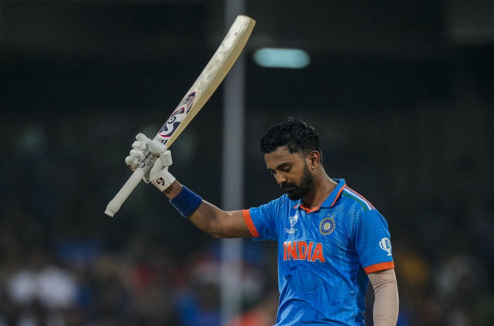
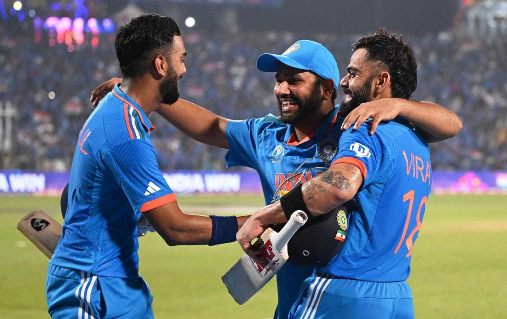

Cricket


Cricket is a sport that is popular in many countries around the world, particularly in the United Kingdom, India, Australia,
Pakistan, Sri Lanka, South Africa, and the West Indies.It is a bat-and-ball game that is played between two teams of eleven players each.
The objective of the game is for one team to score more runs than the other team.
Cricket is played on a circular or oval-shaped field, which is typically a large grassy area. In the center of the field is a rectangular
strip of land called the pitch, which is where most of the action takes place. The pitch is around 22 yards long and has wickets at either end.
The team that is batting tries to score as many runs as possible by hitting the ball thrown by the opposing team's bowler and running between the
wickets.The team that is fielding tries to prevent the batting team from scoring runs by catching the ball or throwing it back to the wicket-keeper, who
stands behind the wickets.
There are different formats of cricket, including Test cricket, One-Day Internationals (ODIs), and Twenty20 (T20) cricket. Test cricket is played over
five days, while ODIs and T20 cricket are shorter formats that are completed in a single day.
Cricket has a rich history and is known for its traditions and customs, such as players wearing white clothing during Test matches, tea breaks, and the
use of a red ball in certain formats of the game.
>